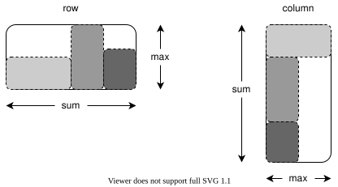
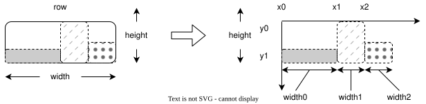
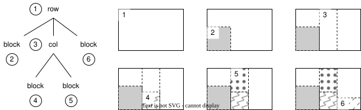
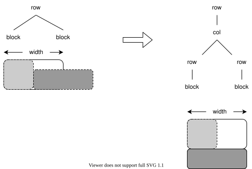

Text is a sequence of characters, but a page is two-dimensional
How can we put the right things in the right places?
Create a simple version of a layout engine for a browser
But the same ideas apply to print
Teletypes started printing in the upper left corner of the page
So the coordinate systems for screens put (0, 0) in the upper left instead of the lower left
Y increases going down
At least X increases to the right as usual
Every cell is a rectangular block
Row arranges sub-blocks horizontally
Column arranges sub-blocks vertically

class Block:
def __init__(self, width, height):
self.width = width
self.height = height
def get_width(self):
return self.width
def get_height(self):
return self.height
Width: sum of widths of children
Height: height of tallest child
class Row:
def __init__(self, *children):
self.children = list(children)
def get_width(self):
return sum([c.get_width() for c in self.children])
def get_height(self):
return max(
[c.get_height() for c in self.children],
default=0
)
Width: width of widest child
Height: sum of heights of children
class Col:
def __init__(self, *children):
self.children = list(children)
def get_width(self):
return max(
[c.get_width() for c in self.children],
default=0
)
def get_height(self):
return sum([c.get_height() for c in self.children])
Rows can contain blocks and columns but must be contained in a single column (unless it's the root)
Columns can contain blocks or rows but must be contained in a single row (unless it's the root)
Can therefore represent document as a tree
def test_lays_out_a_grid_of_rows_of_columns():
fixture = Col(
Row(Block(1, 2), Block(3, 4)),
Row(Block(5, 6), Col(Block(7, 8), Block(9, 10)))
)
assert fixture.get_width() == 14
assert fixture.get_height() == 22
Once we know sizes we can calculate positions
E.g., if cell is a row at (x0, y0):
Its lower edge is y1 = y0 + height
Its first child's upper-left corner is (x0, y1)
Second child's upper-left corner is (x0 + width0, y1)

def place(self, x0, y0):
self.x0 = x0
self.y0 = y0
y1 = self.y0 + self.get_height()
x_current = x0
for child in self.children:
child_y = y1 - child.get_height()
child.place(x_current, child_y)
x_current += child.get_width()
Draw parents before children so that children over-draw
A simple form of z-buffering

def make_screen(width, height):
screen = []
for i in range(height):
screen.append([" "] * width)
return screen
class Renderable:
def render(self, screen, fill):
for ix in range(self.get_width()):
for iy in range(self.get_height()):
screen[self.y0 + iy][self.x0 + ix] = fill
Fix width of row (for example)
If total width of children is greater than this, need to wrap the children to a new row
Handle this by modifying the tree
class WrappedBlock(PlacedBlock):
def wrap(self):
return self
class WrappedCol(PlacedCol):
def wrap(self):
return PlacedCol(*[c.wrap() for c in self.children])

New row class takes a fixed width and some children
Returns that fixed width when asked for its size
class WrappedRow(PlacedRow):
def __init__(self, width, *children):
super().__init__(*children)
assert width >= 0, "Need non-negative width"
self.width = width
def get_width(self):
return self.width
Wrapping puts the row's children into buckets
Converts each bucket to a row with a column of rows
def wrap(self):
children = [c.wrap() for c in self.children]
rows = self._bucket(children)
new_rows = [PlacedRow(*r) for r in rows]
new_col = PlacedCol(*new_rows)
return PlacedRow(new_col)
def _bucket(self, children):
result = []
current_row = []
current_x = 0
for child in children:
child_width = child.get_width()
if (current_x + child_width) <= self.width:
current_row.append(child)
current_x += child_width
else:
result.append(current_row)
current_row = [child]
current_x = child_width
result.append(current_row)
return result